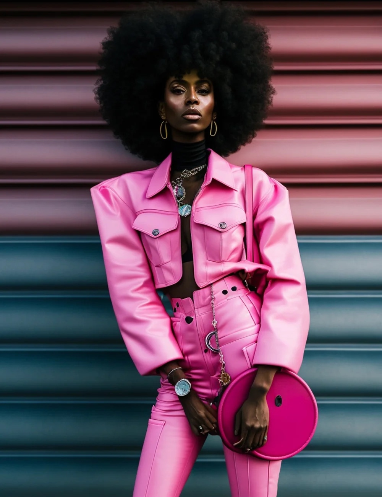
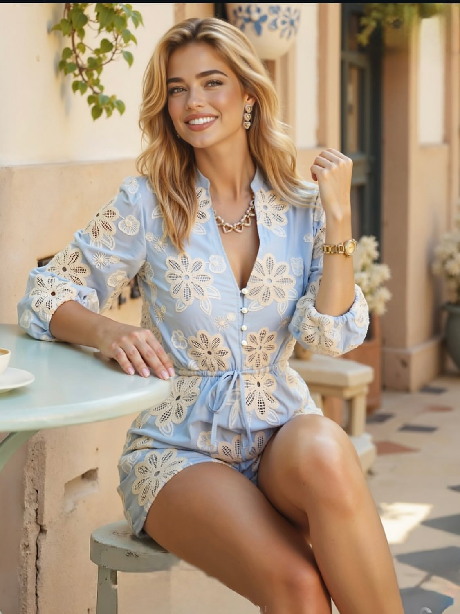
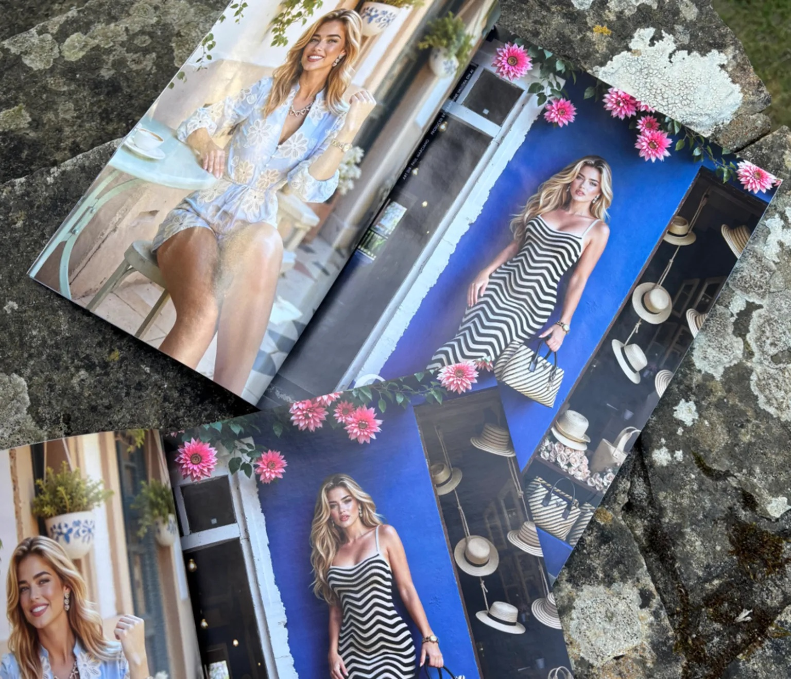

2 Élles Edit · Contexto
A IA democratizou a moda ou só tornou as pessoas descartáveis?
Para pequenas marcas, a IA pode democratizar o acesso à produção de campanhas. Para grandes empresas, ela também levanta um debate sobre criatividade, trabalho humano e o valor das pessoas por trás das imagens.

Quando campanhas produzidas com IA começaram a aparecer em grandes marcas e revistas de moda, a discussão rapidamente deixou de ser estética. Ela passou a ser sobre trabalho humano — e a reação parecia inevitável.
Se empresas com milhões em orçamento substituem modelos, fotógrafos, maquiadores e stylists (só para citar alguns) por imagens sintéticas, a decisão não parece inovação: passa a parecer redução de custos. Mas existe um detalhe que muda completamente essa discussão: a mesma ferramenta pode representar duas histórias completamente diferentes.
Para uma pequena marca, produzir uma campanha profissional pode ser inviável. Nesse caso, a IA não substitui uma equipe criativa. Ela substitui um orçamento que possivelmente não existe. É justamente por isso que tantas pequenas empresas passaram a competir visualmente com marcas muito maiores. Aqui, a inteligência artificial deixa de ser um atalho para cortar custos e vira uma ferramenta de acesso.
Agora compare esse cenário com uma grande marca, que não enfrenta as mesmas limitações financeiras. Quando escolhe a IA, o público entende que haviam pessoas que poderiam ter sido contratadas — e não foram.

É por isso que campanhas visualmente parecidas provocam reações completamente diferentes. A tecnologia é exatamente a mesma, mas o contexto muda todo o significado.
Pequenas marcas ganharam uma oportunidade inédita. Enquanto isso, grandes empresas passaram a enfrentar uma nova crise de imagem. O debate deixa de ser apenas sobre inteligência artificial e passa a ser sobre quem ganha (e quem perde) com ela.

A moda, que sempre vendeu imagens, agora também precisará convencer o público de que ainda sabe atribuir valor às pessoas por trás delas. Porque a mesma inteligência artificial pode democratizar oportunidades, ou transformar criatividade em apenas mais um custo a ser eliminado.
Qual a sua opinião sobre esse assunto?
Texto produzido com ajuda de Inteligência Artificial e editado por uma humana.